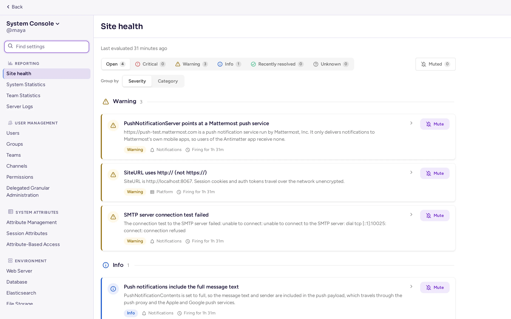
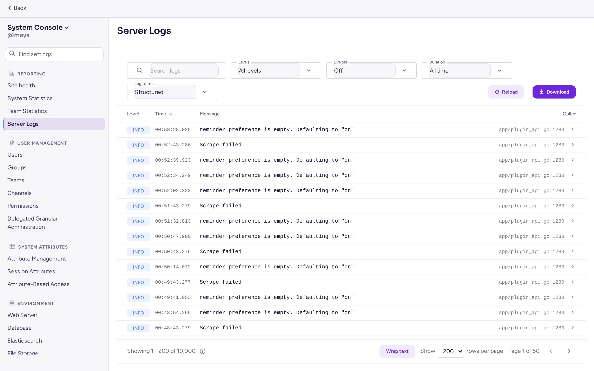

Drift
Hold øje med serveren, gør den i stand til at håndtere flere brugere, bestem, hvor længe data opbevares, og løs de problemer, administratorer oftest støder på.
Sundhedstjek
amctl --local system status(i containeren:docker compose exec antimatter amctl --local system status). Docker-billedets sundhedstjek kører det hvert 30. sekund, sådocker compose psviserhealthyellerunhealthy.GET /api/v4/system/pingsvarer uden logind, til en ekstern overvåger eller en load balancer:curl -fsS https://chat.example.com/api/v4/system/ping.antimatter db pingtjekker, at databasen kan nås med de konfigurerede indstillinger.- Systemkonsol › Rapportering › Systemstatistik viser antallet af brugere, indlæg og sessioner.
- Systemkonsol › Rapportering › Tilstand for websted kontrollerer hver time databasen, søgning, klynge, push, jobs, log ind, compliance og meget mere, og viser, hvad der kræver opmærksomhed, med tilhørende alvorlighed. Du kan deaktivere en fundet fejl, som du ikke behøver at se igen, og finde den senere på fanen Deaktiverede sammen med hvem, der deaktiverede den, og hvornår. Funktionen er aktiveret som standard og erstatter Optimering af arbejdsområder for fulde systemadministratorer (en delegeret administrator, der kun kan læse webstedsstatistik, ser stadig Optimering af arbejdsområder). Deaktiver funktionen med
AM_FEATUREFLAGS_HEALTHDASHBOARD=false.


Målinger
Serveren kan publicere Prometheus-metrikker: anmodningshastigheder og -varer, websocket-forbindelser, database- og cachebrug, jobs, plugin-hooks og mere. Slå dem til i Systemkonsol › Miljø › Ydelsesovervågning:
| Indstilling | Nøgle og variabel | Standard |
|---|---|---|
| Aktivér ydeevnemåling | MetricsSettings.Enable, AM_METRICSSETTINGS_ENABLE | Fra |
| Lytteadresse | MetricsSettings.ListenAddress, AM_METRICSSETTINGS_LISTENADDRESS | :8067 |
| Aktivér ydeevnemåling for klienter | MetricsSettings.EnableClientMetrics | til: browsere og apps rapporterer deres egne tider |
Prometheus scrapes derefter http://<server>:8067/metrics. Hver metrik publiceres under sit Mattermost-navn (mattermost_…) og sit Antimatter-navn (antimatter_…), så eksisterende Mattermost-dashboards fortsat virker. Apps publicerer deres egne metrikker, for eksempel Agents-appen på /plugins/mattermost-ai/metrics.
Metrikporten kræver ingen logind: hold den på et privat netværk. Saitets compose-fil publicerer den ikke; for at scrape den fra værten, tilføj "127.0.0.1:8067:8067" til ports for antimatter-tjenesten.
Metrics-appen
Uden en Prometheus-server samler Metrics-appen (se Indbyggede apps) de samme målinger i en lille tidsserien database inde i Antimatter: hvert 60. sekund, gemt i 15 dage. Hvis du aktiverer Aktivér ydeevnemåling, aktiveres appen også, medmindre du selv har deaktiveret den. Den aktiverer målingsendpointet, når den starter. Dens side i Systemkonsol › Plugins viser databasens størrelse og lader dig downloade dumps af dataene til din egen analyse eller til at vedhæfte til en fejlrapport. Den seneste dag tilføjes også til supportpakker.
Supportpakke
Et supportpakke er en zip-fil med det, der er nødvendigt for at diagnosticere et problem: versioner, statistik, konfigurationen med hemmelighederne fjernet, listen over apps og jobs, databasens skema, den seneste log og ydeevneprofiler. Generér én med amctl system supportpacket, eller i Systemkonsolen fra menuen øverst i sidebjælken (Kommerciel support, hvorefter du kan vælge, hvad der skal inkluderes). Læs den, før du deler den: Den indeholder ikke beskeder, men den indeholder navne på fællesskaber, brugere og indstillinger.
Ydeevne og skalering
En server med 2 CPU-kerner og 4 GB hukommelse kan betjene et par hundrede personer. Før du tilføjer flere servere, skal du se på:
- Databasen. PostgreSQL udfører det meste af arbejdet: Giv den hurtig lagring og hukommelse. Læse-replikater kan overtage læsebelastningen (
SqlSettings.DataSourceReplicas, en liste over forbindelses-URL'er). - Søg. Beskeder søges i databasen som standard. For store servere kan Elasticsearch eller OpenSearch overtage søgning og indeks: Systemkonsol › Miljø › Elasticsearch (
ElasticsearchSettings: Backendtype Elasticsearch eller OpenSearch, Serverforbindelsesadresse, legitimationsoplysninger, derefter aktivér indeks, opbyg indekset og aktivér søgning). - Opkald. Opkaldsmedier er den tungeste belastning. Flyt dem til en rtcd-server: Se Opkald og lyd.
- Åbne filer. Hver tilsluttet person holder en websocket åben. Produktions-compose-filen i antimatter-docker hæver grænsen til 49152 (
ulimits: nofile); gør det samme med systemd (LimitNOFILE). - Logs. Sænk
LogSettings.ConsoleLeveltilINFOellerWARN:DEBUGlogger meget på en travl server. - Komprimering. Hvis Webserver-tilstand er sat til gzip, forhandler
AM_FEATUREFLAGS_ENABLEBROTLICOMPRESSION=trueBrotli-komprimering for API-svar med klienter, der accepterer det, i stedet for gzip (valgfrit, deaktiveret som standard; genstart serveren efter ændring).
Høj tilgængelighed
Flere Antimatter-servere kan køre som et kluster bag en load balancer, uden licens. De skal dele den samme PostgreSQL-database, den samme S3-filopbevaring og konfigurationen i databasen (AM_CONFIG). I Systemkonsol › Miljø › Høj tilgængelighed (ClusterSettings): Slå Aktivér høj tilgængelighed til (ClusterSettings.Enable), giv hver node det samme Klusterets navn (ClusterSettings.ClusterName), og lad noderne nå hinanden på gossip-porten, 8074 TCP og UDP (ClusterSettings.GossipPort). Noderne finder hinanden gennem databasen. Load balanceren skal videresende websockets. For opkald i et kluster, brug rtcd.
Dataopbevaring
Som standard opbevarer Antimatter alle beskeder og filer for evigt. For automatisk at slette gamle, gå til Systemkonsol › Overholdelse › Dataopbevaringspolitikker:
- Global bevaringspolitik angiver Bevaring af kanaler og direkte beskeder og Bevaring af filer for hele serveren: Bevar for evigt, eller et antal timer, dage eller år (
DataRetentionSettings.EnableMessageDeletion,MessageRetentionHours,EnableFileDeletion,FileRetentionHours). - Tilpassede bevaringspolitikker angiver en anden varighed for valgte fællesskaber og kanaler.
- Sletningsskiftet køres hver dag på det tidspunkt, du vælger (
DataRetentionSettings.DeletionJobStartTime, standard er02:00UTC). Kør sletning nu køres øjeblikkeligt, og Politiklog viser, hvad hver kørsel slettede.
Overholdelseseksport og revisionslog
- Systemkonsol › Overholdelse › Compliance-eksport eksporterer alle beskeder og filer hver dag (Aktivér compliance-eksport,
MessageExportSettings.EnableExport, standard er deaktiveret; Tidspunkt for overholdelseseksport, standard er01:00) i ét af de formater, arkiveringssystemer kan læse: CSV, Actiance XML eller Global Relay (en zip-fil eller EML sendt via SMTP).amctl compliance-exportkøres og downloader eksport fra kommandolinjen. - Compliance-overvågning (
ComplianceSettings) skriver daglige rapporter til en mappe. Det er den ældre mekanisme; foretræk Compliance-eksport. - Revisionslog (beta,
ExperimentalAuditSettings) registrerer administrative og sikkerhedshændelser (logind, ændringer af tilladelser og indstillinger) i en separat fil. En logind med single sign-on angiver også, om loginden oprettede kontoen. - Egne servicevilkår beder alle om at acceptere dine vilkår, før de bruger Antimatter, og igen, når du ændrer dem.
Almindelige problemer
”Kan ikke forbinde til serveren” eller beskeder vises kun efter genindlæsning
Websocket-forbindelsen kan ikke oprettes. Tjek, at reverse proxyen videresender Upgrade- og Connection-headers (se nginx-eksemplet), og at webstedets URL stemmer præcist overens med adressen i browseren, herunder https.
Uploads fejler med ”413 Request Entity Too Large”
Proxymodulet afviser størrelsen. Hæv grænsen (nginx client_max_body_size) til mindst Maksimal filstørrelse i Systemkonsol › Miljø › Fildeling (FileSettings.MaxFileSize, standard er 100 MB).
Folk kan ikke starte opkald, eller de deltager, men hører intet
Hvis kun administratorer kan starte opkald, skal du slukke for Test mode for opkald. Hvis opkaldsknappen mangler i en fællesskabs kanaler, er fællesskabet af typen Fællesskab, hvor opkald er slukket som standard: kanalens eller fællesskabets administratorer kan slå opkald til i en kanal eller ændre fællesskabets type (se Hvor opkald er til). Hvis folk deltager, men ikke hører noget, er medieporten blokeret, eller serveren annoncerer den forkerte adresse: åbn 8443 UDP og TCP, og sæt ICE Host Override bag NAT. Folk på netværk, der blokerer begge, har brug for en TURN-server. Se Opkald og lyd.
GIF-vælgeren er tom
Tjek GIF-tjeneste-URL (http://gifs:8080/v2 med webstedets compose-fil) og API-nøgle (GIFS_API_KEY i .env) i Systemkonsol › Plugins › GIFs, og at gifs-tjenesten kører: docker compose ps gifs.
Ingen e-mails ankommer
Brug Test forbindelse i Systemkonsol › Miljø › SMTP, tjek, at Notifikationsadresse (fra) ikke stadig er test@example.com, og søg i loggen efter smtp eller mail.
En app viser ”Kunne ikke startes”
Søg efter dens id i loggen (docker compose logs antimatter | grep <app id>). Deaktiver og aktiver den i Plugin Management for at genstarte den.
Serveren starter ikke
Læs slutningen af dens log. Ofte er databasen ude af rækkevidde (tjek AM_SQLSETTINGS_DATASOURCE med antimatter db ping), en database-migration er fejlet (gendan sikkerhedskopien, der blev taget før opgraderingen, og rapporter fejlen), eller lytteporten er i brug.
Låst ude af administrator-kontoen
Fra serveren kræver lokal ingen adgangskode:
docker compose exec antimatter amctl --local user change-password admin --password 'a-new-password'
docker compose exec antimatter amctl --local user resetmfa admin
docker compose exec antimatter amctl --local roles system-admin adminRapportering af en fejl
Opret en issue i Antimatter community repository med versionen, hvordan du installerede, hvad du gjorde og de relevante loglinjer. Rapportér sikkerhedsproblemer privat, som sikkerhedspolitikken forklarer.